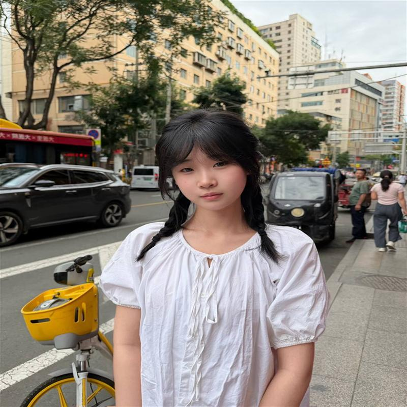

WORKS
作品画廊


科技艺术 · 生成艺术 · 数字影像
向下滚动ABOUT

你好呀，我是陈燕丽，来自甘肃，现在是天津美术学院环境设计专业的大一学生。如果用一句话介绍自己，大概就是——一个总是在观察空间、也被空间治愈着的人。
西北的辽阔天地是我最早的美学启蒙：黄土高原的沟壑、敦煌壁画的斑斓、大漠落日的光影，都悄悄刻进了我的眼睛里。而我和设计的正式缘分始于速写本，从第一次拿起铅笔对着静物发呆开始，我就迷上了用线条和光影记录世界的感觉：一扇窗透进来的午后阳光、老巷子里斑驳的墙面、咖啡馆里桌椅之间刚刚好的距离……这些看似普通的场景，在我眼里都藏着关于"人如何生活"的答案。
现在我正系统地学习环境设计，从素描基础到空间构成，每一门课都让我兴奋不已。我喜欢泡画室，也喜欢拉着朋友去看展、逛老建筑；我相信好的设计不是冷冰冰的图纸，而是能让人走进去就忍不住微笑的温度。
未来的路还很长，我希望保持这份好奇与热爱，慢慢成长为一个能为他人创造美好生活空间的设计师。如果你也喜欢艺术与设计，欢迎和我聊聊，我很乐意认识每一位路过的朋友。
—— 陈燕丽
WORKS
JOURNEY
小学三年级结缘绘画，种下艺术初心。
高一选定美术特长，锚定艺考目标。
兰州集训深耕苦练，省考取得 272 分。
考入天津美院环设，奔赴空间设计之路。